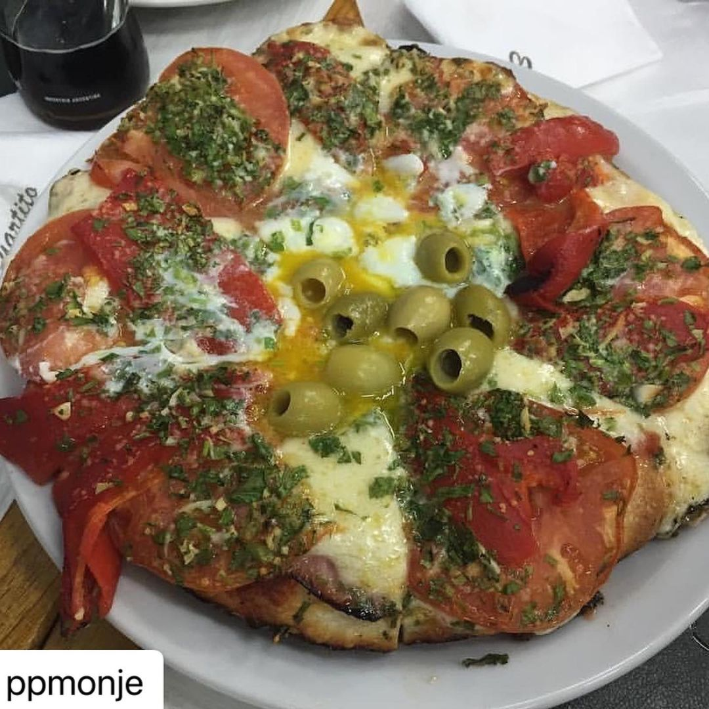
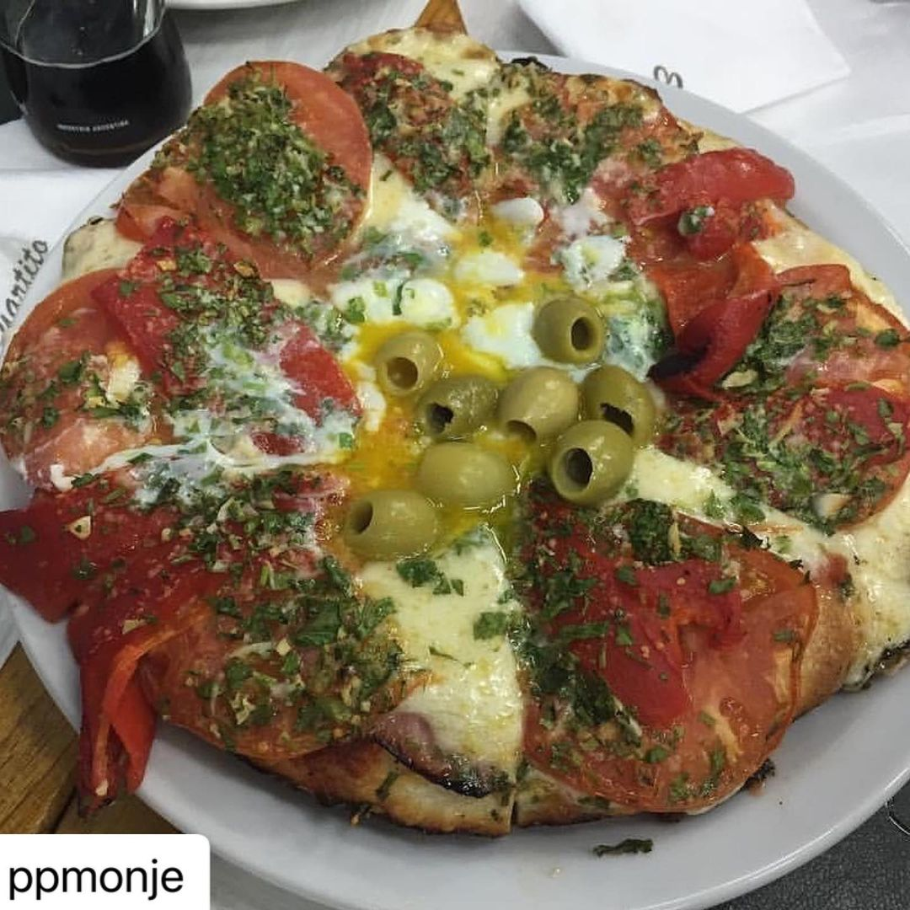

PIZZA
La pizza llegó a Argentina a finales del siglo XIX de la mano de los inmigrantes italianos. Se dice que Nicola Vaccarezza, originario de Nápoles, fue quien hizo la primera pizza que se conoce en Buenos Aires. Cubrió la masa con queso y tomate, y la horneó en su horno de pan. La meca de la pizza. Aunque a Argentina se la conoce por su carne de ternera y sus asadores, la pizza es la verdadera estrella de la gastronomía del país. La pizza porteña, de masa gruesa y con abundante queso, es única. No es de extrañar, pues, que comer en una pizzería tradicional sea uno de los pasatiempos favoritos de muchos argentinos.


 
